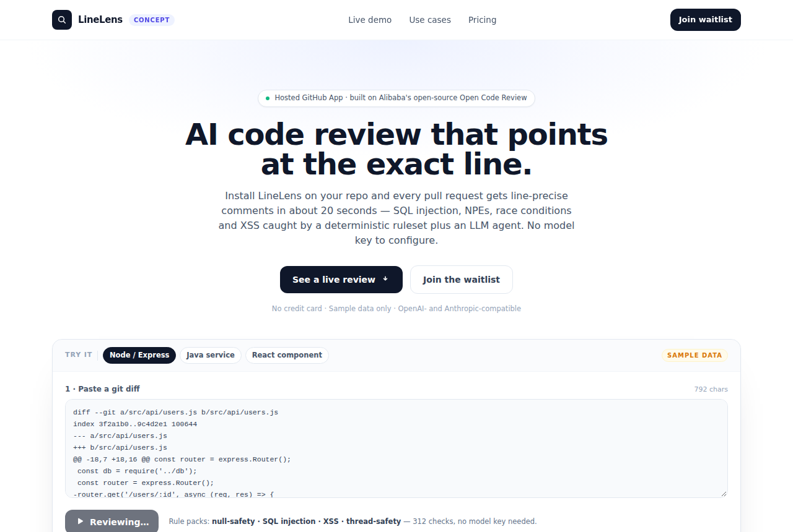

Alibaba's Open Code Review: AI review CLI at scale
alibaba/open-code-review · Dev toolsApache-2.0⭐ 51,657

What it is
alibaba/open-code-review is an Apache-2.0 CLI that reads a Git diff and produces line-level review comments. It pairs a deterministic pipeline with an LLM agent: the pipeline decides which files to review and how to bundle related changes, while the agent can pull full file contents, search the repo, and look at other changed files before commenting. A built-in multi-language ruleset covers NPE, thread-safety, XSS, and SQL injection. You bring your own OpenAI- or Anthropic-compatible endpoint.
Why it's taking off
Per the README, this started as Alibaba's internal review assistant, used by tens of thousands of developers over two years. The team also published AACR-Bench on Hugging Face: 200 real PRs from 50 repos across 10 languages, with 1,505 ground-truth issues annotated by 80+ senior engineers. Their claim is higher precision and F1 than a general-purpose agent like Claude Code at roughly 1/9 the tokens — a deliberate trade of recall for less noise.
Where the product opportunity is
Most teams don't want to wire up a model key, tune a ruleset, and manage CI config themselves. A hosted GitHub App that installs in one click and posts PR comments on a per-repo subscription is the obvious packaging. The harder question is whether that's a real business: CodeRabbit, Greptile, and Graphite already sell exactly this, and the upstream project is an official, well-maintained release from a large company with its own site.
Today's top 5
| # | Repo | Buzz | Startup | Overall |
|---|---|---|---|---|
| 1 | alibaba/open-code-review | 7.0 | 5.9 | 6.78 |
| 2 | ChromeDevTools/chrome-devtools-mcp | 7.33 | 5.4 | 6.7 |
| 3 | backnotprop/plannotator | 7.67 | 6.9 | 6.59 |
| 4 | Topkiflare74/ai--manus2.0 | 8.0 | 6.85 | 6.45 |
| 5 | Likely7/Veyra-NRVideo | 7.67 | 5.6 | 5.75 |